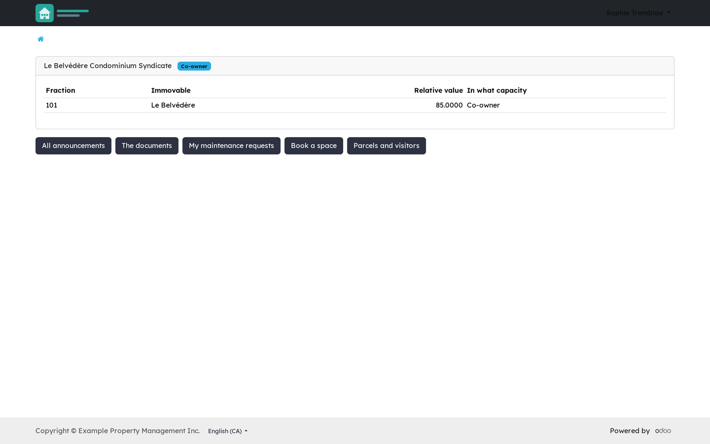
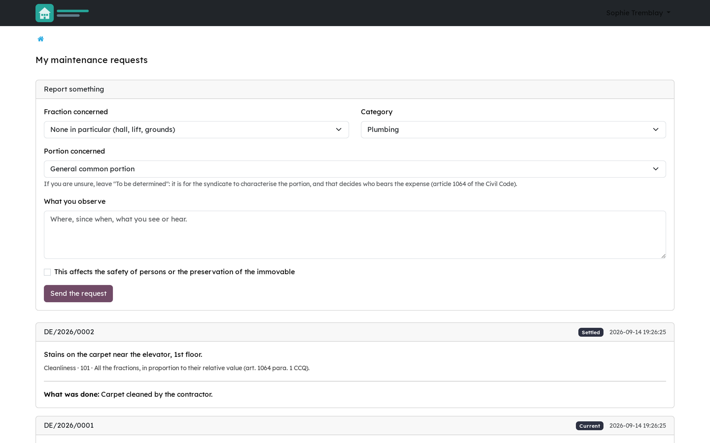
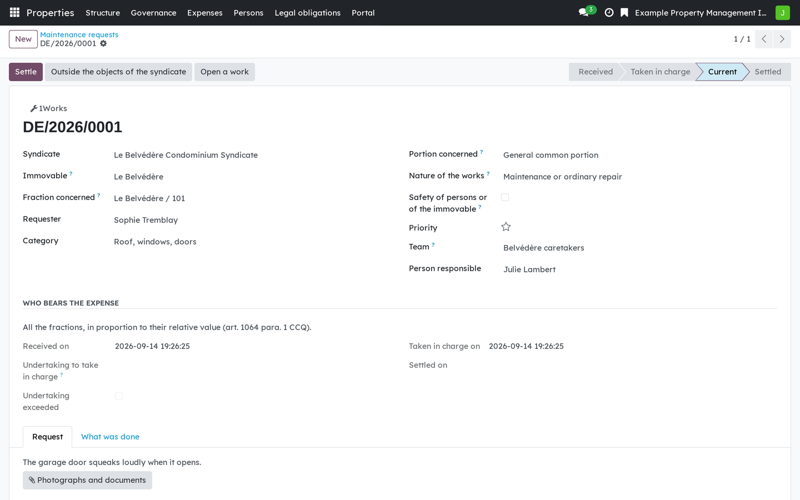
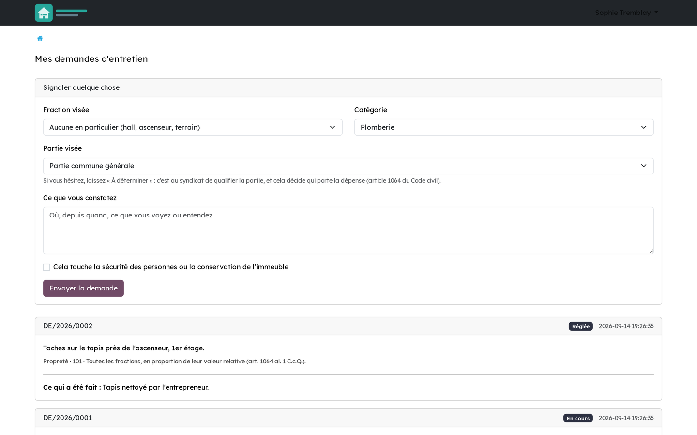
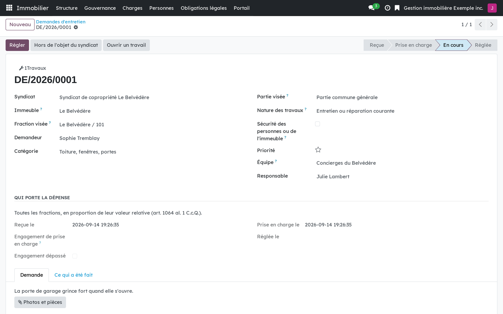

Version française plus bas.
Announcements, documents, maintenance requests, bookings of common spaces, parcels and visitors, on the standard Odoo portal. Two provisions shape it. Article 1070 CCQ puts the name and address of every co-owner and occupant in the register, and any other personal information only with the person's express consent. Article 1070.1 lets a co-owner consult the register in the presence of a director, at reasonable hours. Publishing a register document online gives more than that article requires, so the module makes it a decision of the syndicate, never a side effect.

A co-owner's portal: their fraction, the capacity in which they hold it, and what they can consult or request.

Their own maintenance requests, and the form to file a new one.

The syndicate's side of a request: the portion concerned, who bears the cost, and the thread with the occupant.
Requires Properties: foundation (bf_property_core) and the Odoo portal.
It does not require the financial modules: a syndicate can open a notice board
without opening its books. Bridges that install themselves when their other side is
present: Properties: from the request to the work
(bf_property_operations_portal), Co-ownership: text message notices
(bf_property_sms), Co-ownership: occupant satisfaction
(bf_property_cx), and the privacy bridge
(bf_property_privacy).
Business Source License 1.1. You may use this module in production for your own internal business operations, which include administering immovables that you own or that you are constituted to administer, and letting a person acting on your behalf use your instance for that purpose. Administering immovables for the account of others, or providing the module to third parties as a product or service, whether hosted, managed or resold, requires a separate written agreement with the licensor. Each version converts to LGPL-3.0-or-later on the Change Date stated in the LICENSE file, which sets out the exact terms.
Annonces, documents, demandes d'entretien, réservation des espaces communs, colis et visiteurs, sur le portail standard d'Odoo. Deux dispositions le façonnent. L'art. 1070 C.c.Q. met au registre le nom et l'adresse de chaque copropriétaire et de chaque occupant, et tout autre renseignement personnel seulement avec le consentement exprès de la personne. L'art. 1070.1 permet au copropriétaire de consulter le registre en présence d'un administrateur, à des heures raisonnables. Déposer une pièce du registre en ligne donne davantage que ce que l'article impose : le module en fait une décision du syndicat, jamais un effet de bord.
Le portail d'un copropriétaire : sa fraction, à quel titre il la détient, et ce qu'il peut consulter ou demander.

Ses propres demandes d'entretien, et le formulaire pour en déposer une.

Le côté syndicat d'une demande : la partie visée, qui porte la dépense, et le fil avec l'occupant.
Exige Immeubles : socle (bf_property_core) et le portail d'Odoo. Il
n'exige pas les modules financiers : un syndicat peut ouvrir un babillard sans ouvrir
ses livres. Ponts qui s'installent d'eux-mêmes quand l'autre côté est présent :
Immeubles : de la demande au travail (bf_property_operations_portal),
Copropriété : avis par texto (bf_property_sms), Copropriété :
satisfaction des occupants (bf_property_cx), et le pont vie privée
(bf_property_privacy).
Business Source License 1.1. Vous pouvez utiliser ce module en production pour vos propres activités internes, ce qui comprend l'administration des immeubles dont vous êtes propriétaire ou que vous êtes constitué pour administrer, et l'usage de votre instance à cette fin par une personne qui agit pour votre compte. Administrer des immeubles pour le compte d'autrui, ou fournir le module à des tiers comme produit ou service, hébergé, géré ou revendu, exige une entente écrite distincte avec le concédant. Chaque version passe sous LGPL-3.0 ou ultérieure à la date de changement inscrite au fichier LICENSE, qui fait foi.